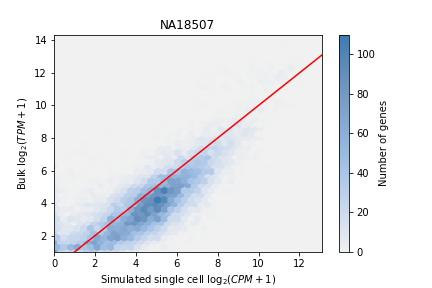
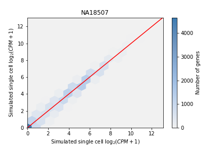
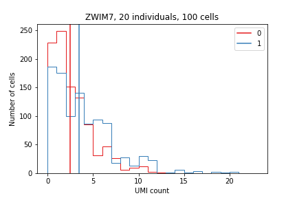
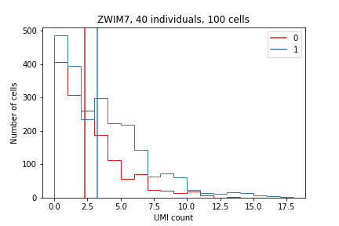
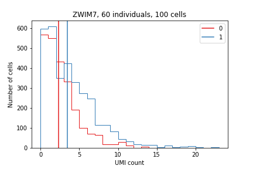
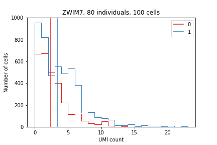

Power to detect QTLs in single cell data
Table of Contents
Introduction
Our goal here is estimate power to detect mean and variance-effect QTLs. The strategy is to resample the single cell RNA-Seq data to generate datasets with equal patterns of dropout, overdispersion, mean-variance dependence, etc.
Resample scRNA-Seq
Assuming the true single cells all came from one individual, generate new single cells by sampling counts for each gene iid. with replacement. This method assumes genes are independent, which is justified only if we perform analysis one gene at a time.
To generate a new data set (with multiple individuals), randomly sample individuals with replacement, and generate a new set of single cells for each sampled individual.
def sample_cells(umi, n=1): """Return a sampled matrix of UMI counts Assume the input matrix is UMI for a single individal. Sample gene counts i.i.d. from the empirical distribution of counts """ result = np.zeros((umi.shape[0], n)) for i, row in enumerate(umi.values): result[i] = np.random.choice(row, size=n, replace=True) return pd.DataFrame(result, index=umi.index) def sample_individuals(umi, annotations, num_individuals=None, num_cells=100): """Return a sampled matrix of UMI counts for multiple individuals num_individuals - # individuals to sample (default: equal number) num_cells - # cells to sample for each sampled individual Returns: umi - matrix of counts individuals - list of resampled IDs """ if num_individuals is None: num_individuals = len(lookup) individuals = list(np.random.choice(annotations['chip_id'].unique(), size=num_individuals, replace=True)) result = pd.DataFrame(index=umi.index) for k in individuals: result = result.merge( sample_cells(umi.loc[:,(annotations['chip_id'] == k).values], n=num_cells), left_index=True, right_index=True) return result, individuals
Plot concordance between simulated and real data
pools = [cpm(sample_cells(umi.loc[:,(annotations['chip_id'] == 'NA18507').values], n=100).agg(np.sum, axis=1), log2=True).to_frame() for _ in range(2)] plot_concordance( x=pools[0], xlabel='Simulated single cell $\log_2(CPM + 1)$', y=bulk['NA18507'].to_frame(), ylabel='Bulk $\log_2(TPM + 1)$', title='NA18507', filename='/home/aksarkar/projects/singlecell-qtl/analysis/figure/power.org/sim/sc-vs-bulk.png') plot_concordance( x=pools[0], xlabel='Simulated single cell $\log_2(CPM + 1)$', y=pools[1], ylabel='Simulated single cell $\log_2(CPM + 1)$', title='NA18507', filename='/home/aksarkar/projects/singlecell-qtl/analysis/figure/power.org/sim/sc-vs-sc.png', gridsize=15)
The true concordance, as previously computed:


Generated single cell. vs bulk and single cell vs. single cell concordance:
 
Simulate at a bulk RNA-Seq QTL
Consider the gene ZWIM7, for which the strongest mean eQTL is
rs73276049. We previously plotted the distribution of UMI counts stratified
by genotype:

Get the genotype for each individual:
def extract_genotypes(f, rsid): head = next(f).split() for line in f: record = line.split() if record[2] == rsid: return {'NA{}'.format(k): int(np.round(float(v))) for k, v in zip(head, record) if k[0] == '1'} return dict()
with gzip.open('/project/compbio/jointLCLs/genotype/hg19/YRI/genotypesYRI.gen.txt.gz', 'rt') as f: lookup = extract_genotypes(f, 'rs73276049')
Simulate new cohorts varying the sample size, stratify on genotype, and plot:
- the distribution of simulated UMI counts
- the mean UMI count
colors = {k: matplotlib.cm.get_cmap('Set1').colors[k] for k in range(-1, 3)} for n in [20, 40, 60, 80]: sampled_umi, individuals = sample_individuals(umi, annotations, num_individuals=n) plt.clf() # We need to handle missing genotypes because NA19092 isn't in the genotype # matrix for k, g in sampled_umi.loc['ENSG00000214941'].groupby([lookup.get(k, -1) for k in individuals for _ in range(100)]): if k >= 0: plt.hist(g, histtype='step', bins=np.arange(g.max()).astype(np.float32), color=colors[k]) plt.axvline(x=g.mean(), color=colors[k], label=int(k)) plt.title('ZWIM7, {} individuals, 100 cells'.format(n)) plt.ylabel('Number of cells') plt.xlabel('UMI count') plt.gca().legend() plt.savefig('/home/aksarkar/projects/singlecell-qtl/analysis/figure/power.org/sim/ZWIM7-{}.png'.format(n))
   
Open problems
- If we estimate the effect size distribution from real data, and use the estimated effect sizes to perform the power calculation, we need to account for winner's curse
- Confounder correction on the UMI counts
- Confounder correction on the genotypes